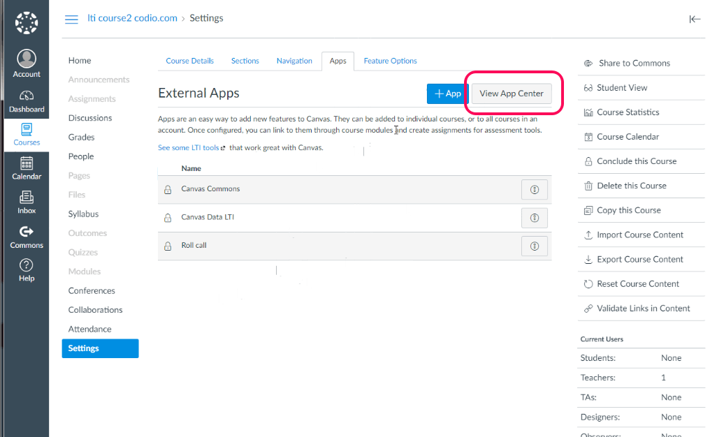
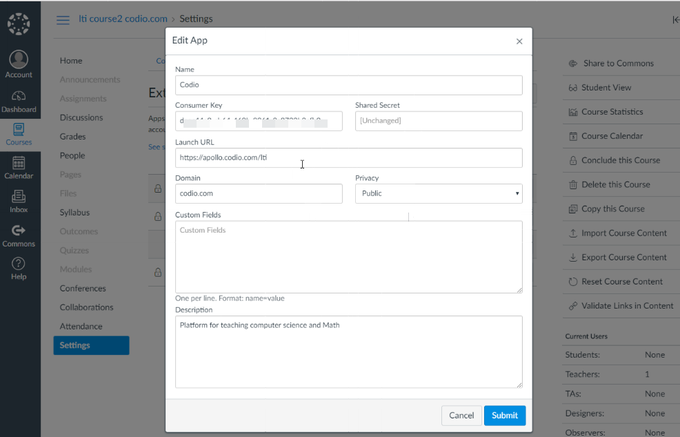
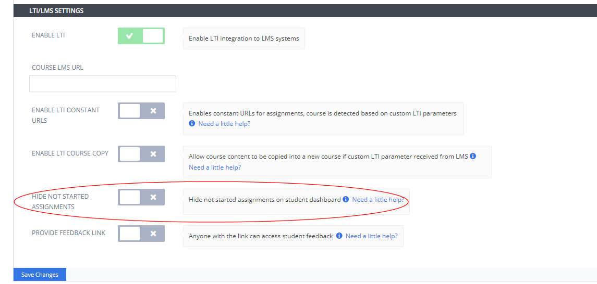
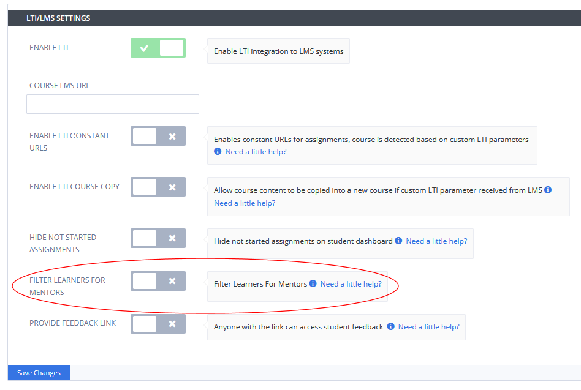
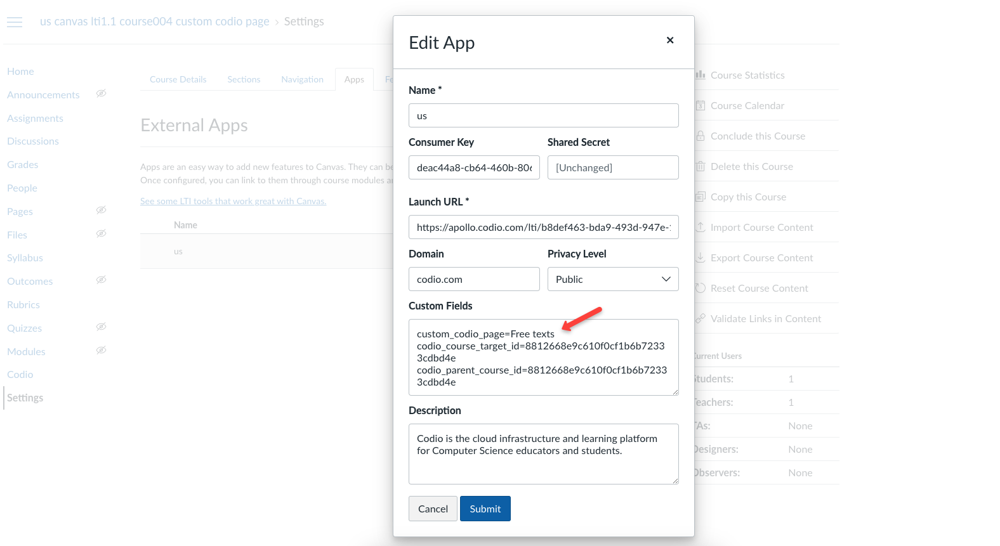

LTI App¶
Note
To use the LTI App, your email address in Codio and your LMS system must match exactly.
The LTI App is only for the US version of Codio. It will not work with Codio UK (codio.co.uk).
The Codio LTI App method allows for an easy way to integrate and to map Codio course assignments to your LMS system.
Please note the steps below are for implementation in Canvas. For details on other supported systems see https://www.eduappcenter.com/tutorials.
Video - Connect Codio to Canvas using the LTI App:
In Codio¶
Go to your organization account settings by clicking on your user name in the bottom left of your dashboard and then selecting your organization within Organizations.
Select the LTI Integrations tab.
Scroll down to the LTI Integration 1.0 section. You should see the following fields. Remain on this screen for the time being.

In Canvas¶
The Canvas user who carries out these steps must be a system administrator.
Create a new Course in your LMS system. We suggest you create a test course called Codio Test Course before you do it with a production course.
Select the Course.
Click on Settings in the left set of options.
In the top links, select Apps.
Click the large button View App Configurations.
Click on the View App Center button.

Navigate (or filter) to find the Codio app, select and + Add App
In Codio and Canvas¶
We will now copy the following global integration fields from Codio to Canvas.
LTI Consumer -> Consumer Key
LTI Secret -> Shared Secret
and select the Add App button to confirm. You should then have something similar to this:

Course LMS URL¶
The Course LMS URL is used to map an LMS course to a Codio course. It ensures that Codio knows how to redirect students back to the correct course should they attempt to access the course through the Codio dashboard. If not entered and students log into Codio to try to start new assignments there will be no link for them to click to be passed to your LMS Course. The LMS user who carries out these steps does not need to be a system administrator but must have suitable privileges to edit courses and assignments.
Video - Course LMS URL:
In Codio, go to the LTI/LMS tab near the top.
Go to the LTI/LMS Settings section.
Select Enable LTI to enable.
Below this is an empty field Course LMS URL. Switch back to your LMS and make sure you are on the Home page of the course. Copy the url in the address bar of your browser to the clipboard and paste it into the above mentioned field in Codio.

Hiding not started assignments in students dashboard¶
Toggling Hide Not Started Assignments to on will suppress the display of assignments that haven’t been started in the student dashboard. Students will need to log into their LMS system to start new assignments. Students may not realize they need to go back to their LMS system to start a new assignment when they don’t see them in Codio. If you don’t hide assignments that haven’t been started you can use the Course LMS URL which will provide them with a link back to their LMS system to start the assignment.

Filter learners for mentors¶
Enabling Filter Learners for Mentors to on will allow you to only show Mentor/Observers specific students that you wish them to see/manage in the Codio course.
To set this up, edit your LTI app as set up above or send as a custom parameter adding codio_custom_mentor_for as a custom field entering as the parameter either the students email addresses or their LMS user IDs. To enter multiple students separate with comma (‘,’)
Example:
codio_custom_mentor_for="student1@email.com,student2@email.com"

If you don’t enable Filter Learners for Mentors, then mentors can see all the students in the course and access all students’ work, even those for whom they are not a mentor.
Set Destination Page¶
The Set Destination Page feature allows you to define which page within an assignment should open by default when a student launches it. This ensures students start on the most relevant content immediately.
To configure this, navigate to Settings > Apps > Edit App, then add a custom field using either custom_codio_page or codio_page, specifying the exact page name you want students to land on. Finally, click the Submit button to save your changes.
Example:
custom_codio_page=<page name> or codio_page=<page name>

This ensures that students are directed to the specified page upon opening the assignment instead of the default starting location.
Open student assignments directly from LMS¶
The Open student assignments directly from LMS feature allows teachers to access their students’ assignments directly from their Learning Management System (LMS) without needing to navigate to the teacher dashboard. This streamlines the grading and feedback process, making it more efficient.
LTI 1.1¶
Custom parameters
custom_actual_user_id = lms user identification, equivalent of user_id when the request is executed without changing the current user
custom_actual_user_email = actual user email, will be used for registration if custom_actual_user_id is not matched to existing user
custom_actual_user_role = actual user role, should not be Student-like role
custom_actual_user_name_family = actual user family name
custom_actual_user_name_given = actual user given name
custom_actual_user_name_full = actual user full name, could be omitted if custom_actual_user_name_family and custom_actual_user_name_given passed
Example:
custom_actual_user_id=123
custom_actual_user_email= lms-admin@email.com
custom_actual_user_role=Instructor
custom_actual_user_name_family=Family
custom_actual_user_name_given=Name
custom_actual_user_name_full=Name Family
LTI 1.3¶
Custom parameters claim object specified in https://purl.imsglobal.org/spec/lti/claim/custom
actual_user
id = lms user identification, equivalent of sub when the request is executed without changing the current user
email = actual user email, will be used for registration if custom_actual_user_id is not matched to an existed user
role = actual user role, should not be Student-like role
given_name = actual user given name
family_name = actual user family name
full_name = actual user full name, could be omitted if custom_actual_user_name_family and custom_actual_user_name_given passed
Example:
"https://purl.imsglobal.org/spec/lti/claim/custom": {
"actual_user_id": "123",
"actual_user_email": "lms-admin@email.com",
"actual_user_role": "Instructor",
"actual_user_given_name": "Name",
"actual_user_family_name": "Family",
"actual_user_full_name": "Name Family"
}
Note
The parameters should be set by LMS dynamically based on current user, not statically. If you need assistance contact help@codio.com
Important
Canvas/Moodle/Blackboard do not support this feature.
Mapping an Assignment to a Canvas Assignment¶
The final mapping step needs to be taken for each individual assignment within Codio. It maps a Canvas assignment to a Codio assignment.
In Canvas¶
Make sure you are in the Courses area.
Click on the Assignments link in the left hand side.
Provide a name for the Assignment.
Set the points for the Assignment. When the grades get passed back later, the Codio percentage score will be scaled to the points value you specify here.
Scroll down and look for the Submission Type field.

You should now click on the dropdown list and select External Tool.
Specify the assignment using one of the two options:
Add by Resource Selection Preview (recommended)
Click the Find button.
Click the Codio tool.
Select the assignment you want to map to your course in Canvas.
Add by LTI Integration URL
Return to Codio and navigate to the course. Ensure you are in Overview mode.
To the right of the assignment, click the icon with 3 blue dots and select LTI Integration URL. You should copy the LTI integration url to the clipboard by clicking on the field (it will auto copy).
Paste the LTI Integration URL in the URL field under Enter or find an External Tool URL.
Select Load This Tool In a New Tab.
Click the Save and Publish button.
Make sure the Canvas course is published.